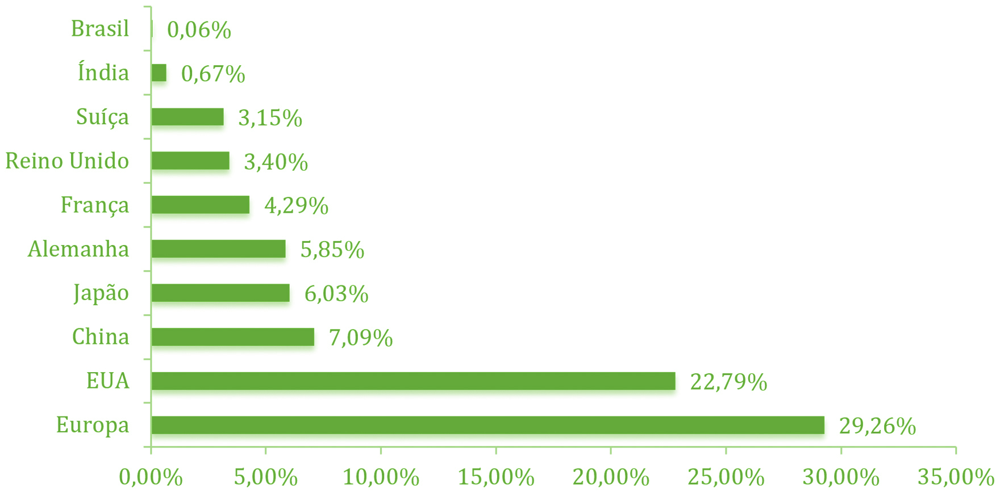

Medicamentos estão associados à Industria farmacêutica cujo conceito apresentamos a seguir:
A indústria farmacêutica caracteriza-se como um conjunto de oligopólios com multiprodutos diferenciados em segmentos de classes terapêuticas específicas. Ela está inserida em um setor que atua na pesquisa, no desenvolvimento, na produção, no comércio e na distribuição de medicamentos (OLIVEIRA et al, 2006).
A indústria farmacêutica surgiu após a Segunda Guerra Mundial, durante o período da segunda Revolução Industrial com a entrada da penicilina na terapêutica médica em escala industrial e com o surgimento das grandes corporações farmacêuticas.
Podemos considerar que dentre os mais diferentes setores industriais, o setor farmacêutico é um dos mais inovadores, e por conta disso há a necessidade dos altos investimentos em pesquisa e desenvolvimento (P&D) para a busca de novos fármacos. Em contrapartida, este setor também é um dos mais rentáveis em escala global, e, por isso, é dos mais competitivos. Esta competição por aumento da rentabilidade vem levando as grandes multinacionais do setor a sucessivas fusões e/ou a adquirirem empresas menores, por isso dizemos que este setor é um oligopólio (PINTO E BARRETO, 2013).
Para ilustrar em números o tamanho deste setor, estima-se que em 2020 o mercado farmacêutico mundial deverá atingir cerca de US$ 1,4 trilhões e os principais países emergentes, dentre os quais se insere o Brasil, serão responsáveis por 25% das vendas globais em 2020. Estima-se que Brasil se torne o 5º maior consumidor deste mercado (INTERFARMA, 2016), vide tabela abaixo:
| Classificação | Ano | ||
|---|---|---|---|
| 2010 | 2015 | 2020 | |
| 1 | USA | USA | USA |
| 2 | Japão | China | China |
| 3 | China | Japão | Japão |
| 4 | Alemanha | Alemanha | Alemanha |
| 5 | França | França | Brasil |
| 6 | Itália | Reino Unido | Reino Unido |
| 7 | Reino Unido | Brasil | Itália |
| 8 | Espanha | Itália | França |
| 9 | Canadá | Canadá | Índia |
| 10 | Brasil | Espanha | Canadá |
Fonte: Adaptado de INTERFARMA (2016).
Atualmente Estados Unidos e Europa detêm as maiores fatias do mercado, e constituem os principais países inovadores no setor, vide gráfico abaixo.
|  |
Autor: AKKARI et al (2016).
É um sistema que faz parte da economia política que caracteriza um mercado onde existem poucos vendedores para muitos compradores.